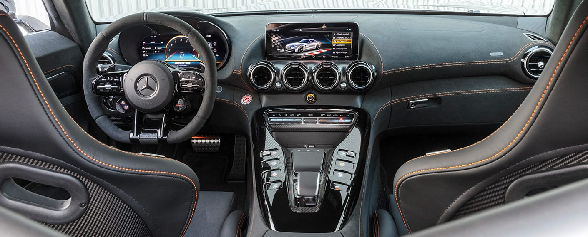

2021 Mercedes-AMG GT Black Series
A detailed Mercedes-AMG model review of the GT Black Series
 Mercedes AMG
Mercedes AMG

Since 2006, the Black Series has held a special place at AMG: rare
automobiles that represent the most direct transfer of motorsport
technology to road-ready vehicles.
The new AMG GT Black Series pushes this tradition to an unprecedented
level of power and performance. And while the vehicle is indeed
road-ready, the only place to truly test its capabilities is on a
closed track.
1.Engine Capacity
For underneath the hood is the most powerful AMG V8 engine, methodically configured by Affalterbach’s engineers to deliver optimal firing at minimal displacement.It achieves a staggering 720 horsepower and 590 lb-ft of torque, races from 0–60 in 3.1 seconds, and reaches 124 mph in fewer than 9 seconds .
Based closely on the racing program’s GT3, the GT Black Series is as close as you can get to the real thrill of the race.
2.Aerodynamics
Not only is it the most powerful AMG ever, it’s also the most aerodynamic, contains the most intelligent mix of materials and boasts the most impressive driving dynamics2.Performance
Now, let’s move from performance to design — well, not exactly. Because it’s impossible to talk about the sleek appearance of the GTBlack Series without discussing performanceThis vehicle has been sculpted and refined to achieve the highest output and the purest dynamics .
The wide radiator intake — adapted directly from the GT3 — eliminates the need for separate intakes near the wheel wells. Semicircular flics and air curtains increase downforce.
The large, carbon-fiber outlets on the hood likewise help improve downforce and high-speed control .
And the rear spoiler can mechanically adjust to driving conditions, allowing for an optimal balance between speed and stability.